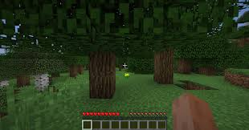
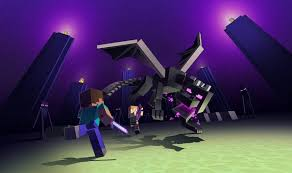

Survie
Dans ce mode du jeu,le but est de survivre dans
un monde quasiment infini en collectant des ressources
diverses allant d'une simple bûche de bois au diamant en
passant par le blé ou du lait.
Le but principal est de s'armer pour aller confronter
l'ender dragon,le boss final du jeu.
Dans ce mode,le personage a des points de vie et de faim,il peut mourir de beaucoup de manières
différente,chute,faim,suffocation,attaque de monstre,lave etc...)
